| 27/05/25 | We investigate how commuting patterns affect the scaling laws of crime in this recent pre-print. | 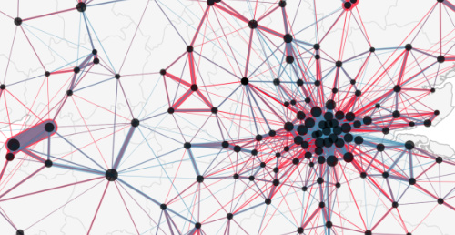 | 03/01/25 | In this fresh preprint, we explore the homophily trap concept in networks, where within-group interaction can sometimes disadvantage minorities. | 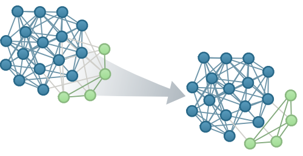 |
| 11/07/24 | I'm thrilled to join the PLOS Complex Systems Editorial Board. If you work with complex adaptive systems, consider sharing your work with us. | |
| 04/03/24 | Join us for a fully-funded PhD in Computer Science at the University of Exeter on tackling societal challenges with computational social science. |
|
| 20/12/23 | We explore online fingerprints and reveal how web domains can uniquely identify individuals in this fresh preprint. | 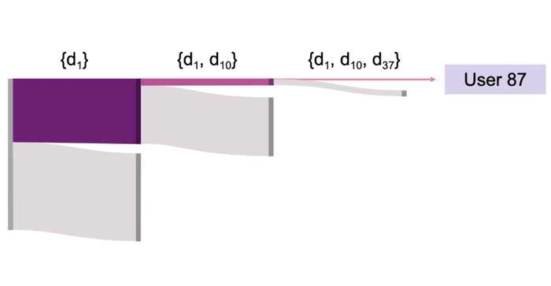 |
| 29/11/23 | Our paper on the inadequacies of nominal assortativity is published in Nature Scientific Reports. See the press release. | 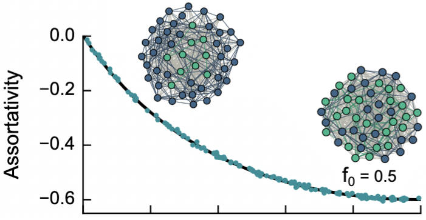 |
| 07/06/23 | Our recently published paper presents four data sets combining the SocioPatterns platform with surveys to understand conferences. | 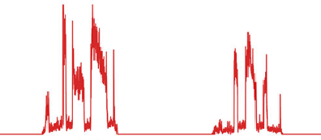 |
| 07/12/22 | We discuss how computational models help understanding inequality in social phenomena in this SIAM News piece. | |
| 18/11/22 | In this preprint, we expose the inadequacies of nominal assortativity for assessing homophily in networks. | |
| 27/06/22 | Our work on inequality in face-to-face gatherings is published in Nature Communications Physics. | 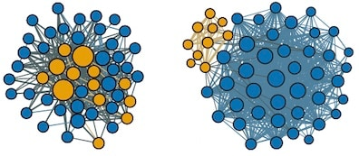 |
| 04/01/22 | Fresh on arxiv: we uncover states of predictability in human mobility. | 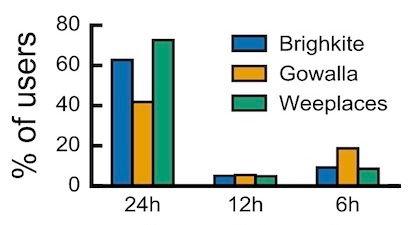 |
| 01/12/21 | Paper on the inadequacy of using crime rates per capita to rank cities was just published in the Crime Science journal. |
|
| 19/07/21 | We are organizing the Exeter School on Urban Analytics as the second week of the Sustainability Summer Programme at the University of Exeter. |
|
| 22/06/21 | We examine how homophily drives inequality in face-to-face gatherings in this new preprint. | |
| 30/12/20 | Check out a fresh new preprint on the scaling laws of crime and the inadequacy of using crime rates per capita to rank cities. |
|
| 29/12/20 | We investigate how people navigate on the Web and characterize our tendency to follow online routines (paper accepted in ICWSM 2021). | 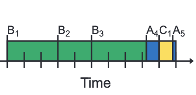 |
| 25/05/20 | Our paper on networks and swarm intelligence is online in Applied Network Science. | 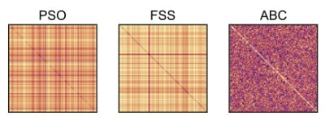 |
| 10/06/19 | Submit your work to Structure and Dynamics of Crime, a special issue in the Applied Network Science journal. | |
| 18/01/19 | We are organizing the fourth NetCrime (Symposium on the Structure and Mobility of Crime) at NetSci 2019. | |
| 10/01/19 | Our preprint with an overview of spatial concentration and temporal regularities in crime is out on arXiv. | |
| 09/11/18 | Check out our new preprint on computational swarm intelligence and network science. | 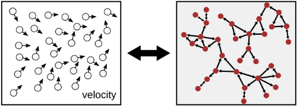 |
| 27/09/18 | Read our post on the SpringerBlog about listening to the changes in the urban rhythms. | 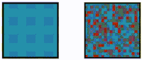 |
| 26/09/18 |
Our latest work on temporal regularities in crime is online in EPJ Data Science. |
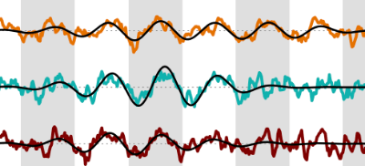 |
| 07/04/18 | I gave a short tutorial at Complexity72h on performing embarrassingly parallel data analysis with IPython. |